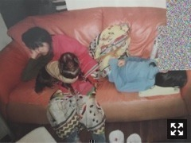
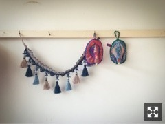

| 2017/04 17 Mon | 玉葱泣き。769回目 |
肌荒れが徐々に治ってきました。
髪短かった頃の写真見つかったーー

爆睡してるやつしかなかった。
小学5年、のはず。
隣で寝てるのは関西の幼馴染。
遊ぶための私服を
テーマ決めてペアルックしてました。
これはインディアンな巻きスカートを
揃えたやつだ。
タートルネックもそれぞれ色味を合わせて。
エスニックな格好よくしてたなあ、
アクセサリーごてごてにつけてたなあ
この子の家、いつもラベンダーの香りが
してたんですよ。たぶん、
私の家はお香みたいな香り。
どっちも嗅ぐと思い出す。
だから、最近似たような香り探して
キャンドルとルームスプレー買いました。

まりかっと美術セット
ホォアナ デ アルコの鍋つかみ
5thの時、福島さんにプレゼントしたもの
飾ってあったーーーー
ちなみに2ndの衣装もホォアナ。
今回の部屋着衣装もホォアナ。
最近買った部屋着もホォアナ。
新たに靴がぞくぞく増えてきた。
スニーカー3足にスリッポン。
全部中古！
靴以外ももっといろいろ集めて
いつかどんと見せるタイミングないかなあ
ないかなあ
ないかなあ

立ち入り禁止内から見えた景色
最近よく外出てるから
お花見たくさんしてるな
雨降ってるからそろそろ散るかな
まりか
コメント(800)
2017/04/17 23:59